Press
The facts, the clips and the screenshots — use any of it.
Snuggery is an iPhone app for the small apps people build by asking an AI. Ask for a training log, a recipe box or a dashboard and you get a folder of HTML with nowhere to run it on a phone; Snuggery is where it lives. Import the ZIP, tap it, it runs — offline, in a sandbox that cannot reach the network, beside the user's PDFs, notes and spreadsheets. Apps read the data files stored next to them, which the user can edit in place. Version 1.1 adds dashboards that refresh themselves through Shortcuts, and Ask: a question about a file, a folder or a mini-app's data, answered on the phone by Apple's on-device model. Made by one developer in Norway. One purchase after a free week.
The facts
- Platform: iPhone, iOS 18 and later. Ask needs a phone with Apple Intelligence (iOS 26).
- Price: one purchase after a complete 7-day trial. No subscription, no account. When the trial ends only adding new content is gated; everything already imported keeps working and can always be exported.
- What it does not do: generate apps. Its Create tab writes a prompt for the user's own AI; the ZIP that comes back is what gets imported. The app contacts no AI service.
- Privacy: no account, no analytics, no third-party frameworks; the app makes no network requests of its own. Mini-apps are blocked from the network by a WebKit content rule list, a Content-Security-Policy header and the navigation policy, independently, and there is no JavaScript-to-native bridge. The review note invites Apple to review it in Airplane Mode; you can too. The privacy policy is short enough to read in a minute.
- App Review: approved by App Review; the review note makes the guideline 4.7 (HTML5 mini apps) case explicitly — the app distributes nothing; every mini-app is a file the user imported, the way a document viewer holds documents.
- Live dashboards: a GitHub Action (or any scheduler) writes a small JSON file; a Shortcut on the phone copies it into the app through an App Intent, on the user's schedule. The app also has a Rebuild Data Now button that runs that shortcut. Snuggery never fetches anything itself.
- The examples: twelve apps in an open template repository, all built by asking an AI — a 3D mountain from Kartverket's open terrain, the Norne oil-field benchmark with its topside, the galaxy from JPL and Gaia data, a human body in 934 parts, a Garmin dashboard. They run in a browser too.
- Built with: Apple frameworks only — SwiftUI, SwiftData, WebKit, StoreKit 2, App Intents and, for Ask, Foundation Models; no third-party code. Mini-apps are served over a custom URL scheme whose handler is a static file server for one package directory, each app with its own origin; ZIP import inspects every entry before extracting and is bounded by absolute limits, never compression ratios.
- App Store: apps.apple.com/app/id6805883209
- Contact: mtomasgaard+snuggery@gmail.com — codes for the purchase on request.
Clips
Shown here as the plain recording. Each link downloads the framed, captioned version for posting: vertical, 1080×1920, H.264, no sound, the caption burned in. Recorded from the app on the simulator with its own examples; nothing retouched.
besseggen.mp4 — a mountain in 3D from open map data
norne.mp4 — an oil field's reservoir and platform from open data
milky-way.mp4 — from the planets to the galaxy, from real data
anatomy.mp4 — 934 anatomical structures on a phone
the-loop.mp4 — a dashboard that refreshes itself every morning
ask.mp4 — a question about your own file, answered on the phone
App Store screenshots (6.9", 1320×2868)
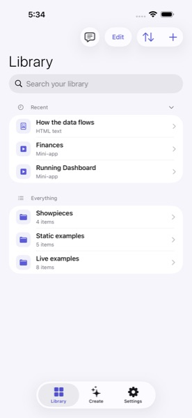
The Library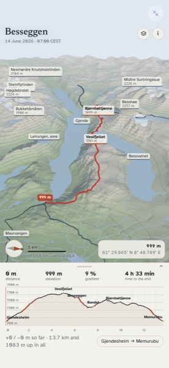
Besseggen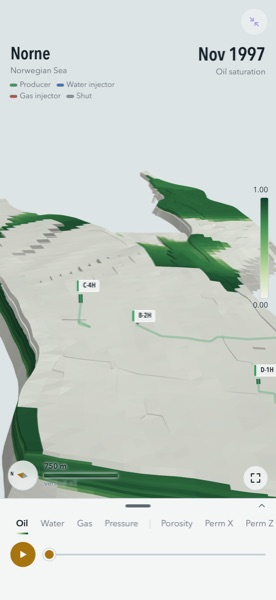
Norne Reservoir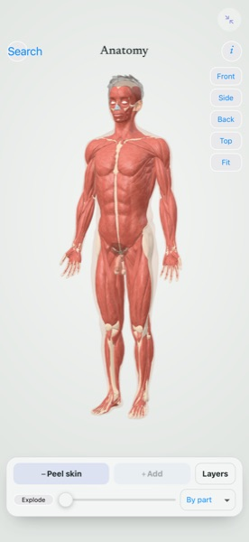
Anatomy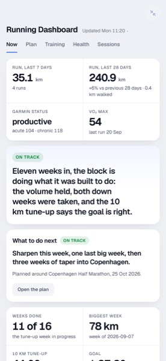
Running Dashboard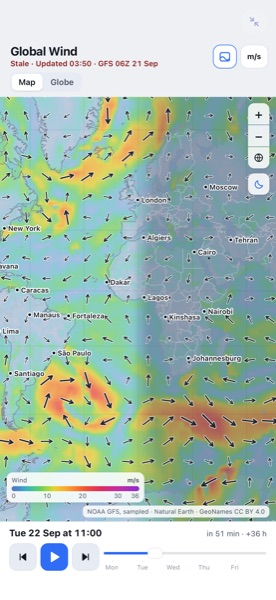
Global Wind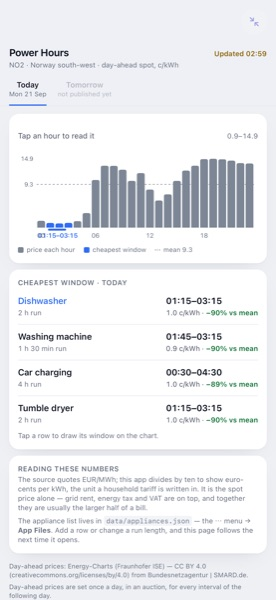
Power Hours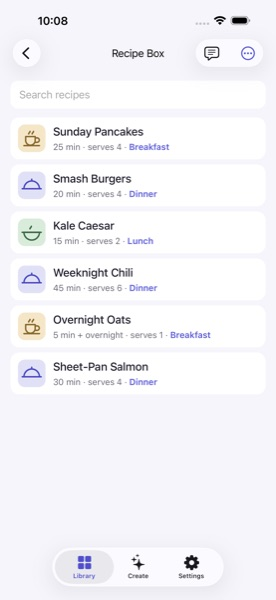
Recipe Box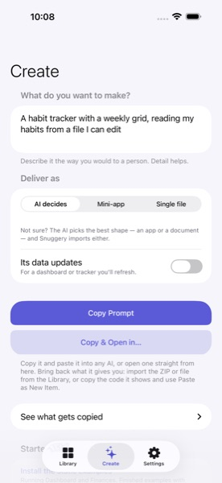
Create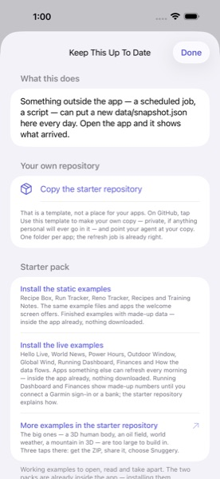
Keep This Up To Date
{kind=link}
{kind=link}
{kind=link}
{kind=link}
{kind=link}
{kind=link}
{kind=link}
{kind=link}
{kind=link}
{kind=link}
Icon and diagram
- Icon, 512 px
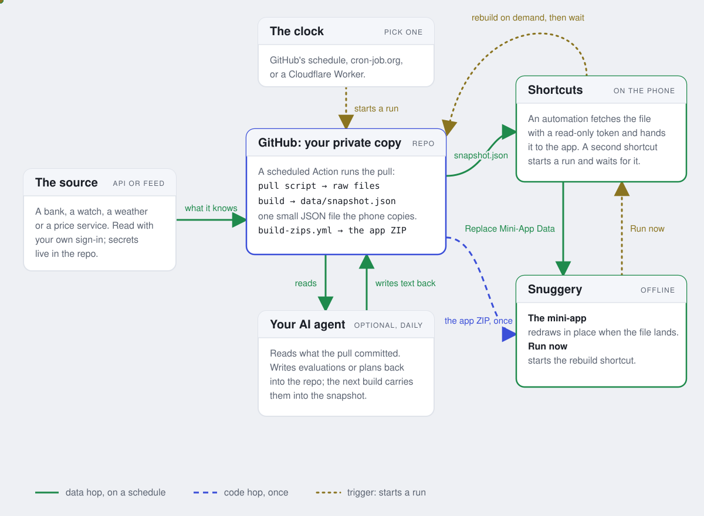
The loop, as a diagram
{kind=link}
{kind=link}